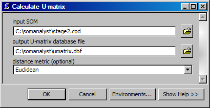

Calculate U-Matrix
Creates a datbasefile with the U-matrix values for a SOM.
ArcGIS Reference

Parameters
- input SOM
- The input SOM for which to calculate the U-matrix.
- output U-matrix database file
- The output database file that will contain the U-matrix values.
- distance metric
- The distance metric to use to calculate the U-matrix.
Code Reference
-
uiUmatrix.uMatrix(inName, outName, decimalPlaces, metric)
Calculates the U-matrix for a SOM.
| Arguments : |
- inName
The input SOM filename.
- outName
The ouput U-matrix filename.
- decimalPlaces
The number of decimals to round to.
|
|---|